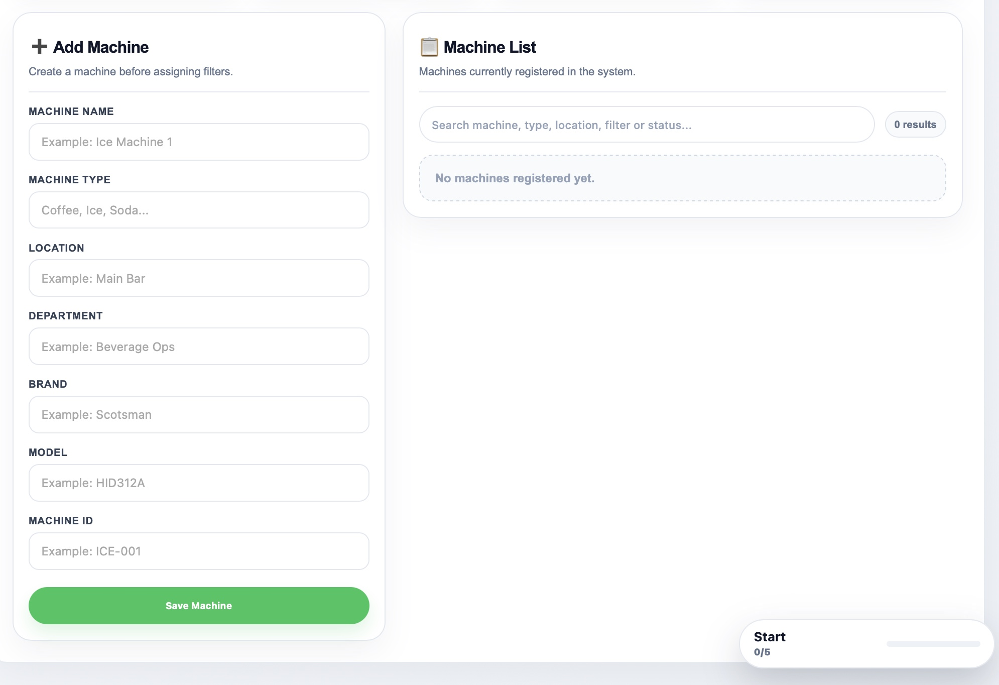
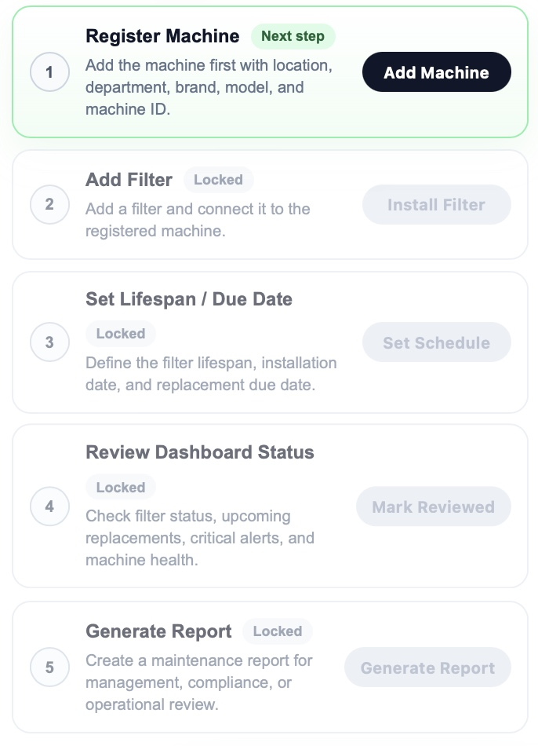
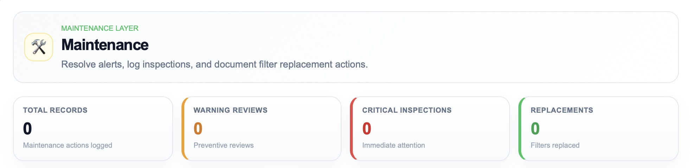
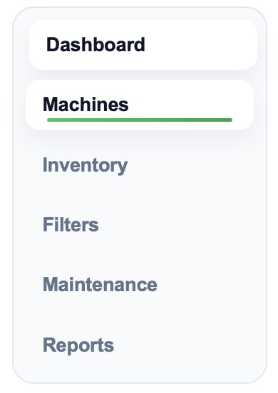

FiltraCore is a smart filtration monitoring system designed for casinos, restaurants,
and industrial operations. It is built around preventive maintenance workflows inspired by
FDA Food Code guidance, HACCP system thinking, and NSF-aligned sanitation practices to help
teams monitor PSI, track filter lifespan, document replacements, and maintain cleaner,
more consistent water systems.
Register each machine with location, department, brand, model, and machine ID before assigning filters.

Guided workflow
Walk through machine registration, filter installation, lifespan setup, dashboard review, and reporting.

Maintenance layer
Resolve alerts, log inspections, document replacements, and keep maintenance records visible.

Module navigation
Move between dashboard, machines, inventory, filters, maintenance, and reports quickly.

Built around food safety systems
FiltraCore is designed to support operational routines inspired by FDA Food Code principles,
HACCP-style preventive control systems, and NSF-focused sanitation best practices. Rather than waiting
for failures, teams can document filter activity, verify replacement intervals, and build cleaner
maintenance habits into daily operations.
HACCP mindset
Apply preventive thinking to water filtration by treating PSI drops, overdue filters, and poor water flow
as critical warning points before they affect service quality, equipment reliability, or food safety routines.
FIFO filter rotation
Support first-in, first-out inventory habits so older cartridges, stored filters, and replacement stock
are used in the correct order and tracked clearly across locations and machines.
Traceability logs
Record installation dates, due dates, PSI values, technician actions, and service notes to strengthen
accountability, verification, and inspection-ready maintenance history.
NSF-aligned sanitation focus
Reinforce cleaner equipment practices by supporting scheduled filter changes, cleaner water pathways,
and more consistent maintenance verification for beverage, ice, and food service systems.
Corrective action tracking
When PSI falls outside target range or a replacement is overdue, FiltraCore helps teams document
corrective actions before the issue turns into downtime or a sanitation risk.
Date marking & intervals
Keep visible replacement intervals, install dates, and next-service dates so operators can verify
schedules quickly and maintain disciplined preventive maintenance routines.
Machine-by-machine visibility
View each machine as its own monitored control point with service history, filter status,
and replacement accountability tied directly to the unit.
Inspection-ready records
Build a more organized record trail for supervisors, engineers, and operations teams by keeping
maintenance documentation accessible, consistent, and easy to verify.
Why FiltraCore?
Avoid health violations, reduce maintenance costs, and support better food safety routines across beverage,
ice, coffee, and water systems. FiltraCore helps teams stay organized with filter traceability, FIFO-ready
inventory logic, preventive maintenance records, and cleaner operational discipline.